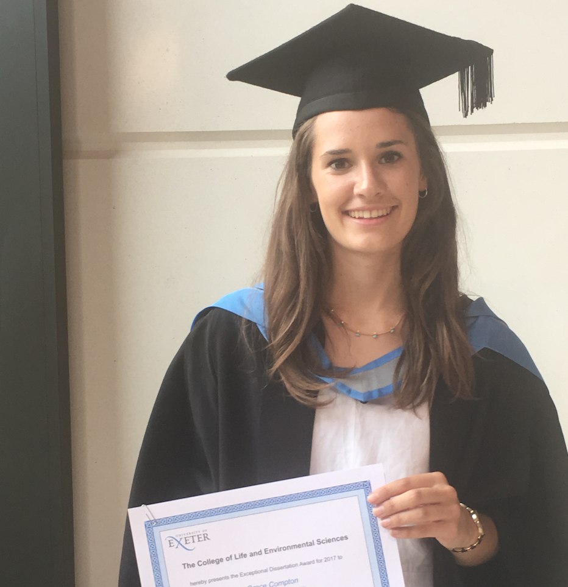
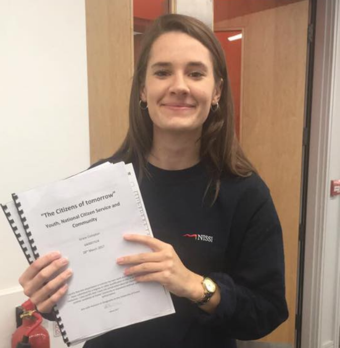
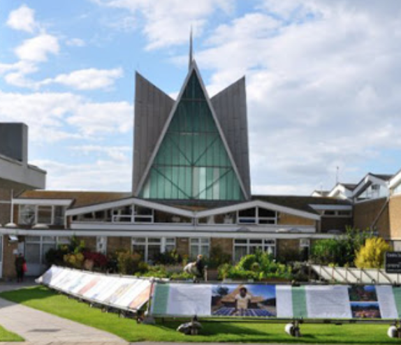

Education



CodeFirst Girls - Intro to Web Development
2020
- I recently completed the Intro to Web Development course gaining a foundational understanding of html, CSS and Javascript.
Canterbury Christchurch - MA Transformational Leadership
2017 - Present
- Currently completing my thesis to gain MA in Transformational Leadership in Education.
- PGDE Qualification and Qualified Teacher Status awarded.
University of Exeter - BA Geography
2014 - 2017
- 1st Class with Honours.
- Awarded a College of Life and Environmental Sciences Commendation for Academic Achievement.
- Dissertation awarded a Double 1st and Nominated for The Royal Geographical Society Political Geography Research Group (PolGRG) Undergraduate Dissertation prize for 2017.
- Dissertation written about the National Citizen Service, interviewing young people and examining the political context of government funding for community programmes.
Bishop's Stortford College - A-Levels/GCSE
2007 - 2014
- A Level: Design and Technology (A*), Geography (A), Maths (A), AS Level: Physics (A).
- 11 GCSEs: 7 A* and 4 A grades including Maths and English.
- All Rounder Scholarship awarded, won Whole School prizes for Geography and for Design & Technology in Upper 6th. Also received Academic Endeavour Award.